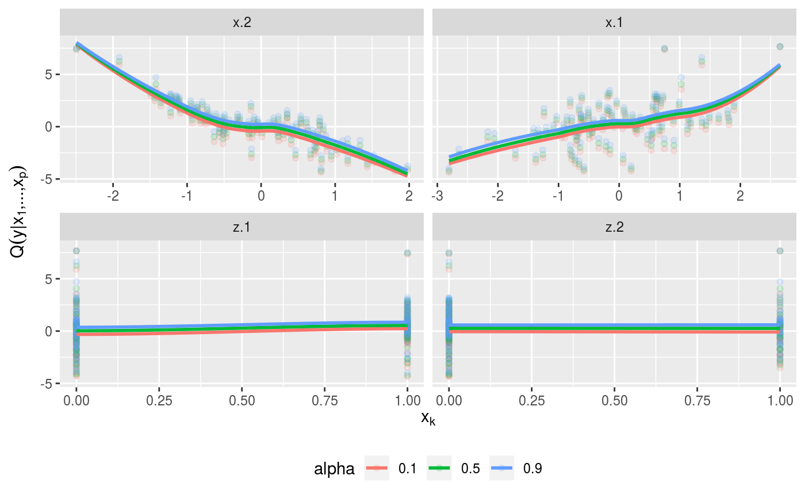

R/predict.vinereg.R
predict.vinereg.RdPredict conditional mean and quantiles from a D-vine regression model
# S3 method for vinereg predict(object, newdata, alpha = 0.5, cores = 1, ...) # S3 method for vinereg fitted(object, alpha = 0.5, ...)
| object | an object of class |
|---|---|
| newdata | matrix of covariate values for which to predict the quantile. |
| alpha | vector of quantile levels; |
| cores | integer; the number of cores to use for computations. |
| ... | unused. |
A data.frame of quantiles where each column corresponds to one
value of alpha.
# simulate data x <- matrix(rnorm(200), 100, 2) y <- x %*% c(1, -2) dat <- data.frame(y = y, x = x, z = as.factor(rbinom(100, 2, 0.5))) # fit vine regression model (fit <- vinereg(y ~ ., dat))#> D-vine regression model: y | x.2, x.1 #> nobs = 100, edf = 2, cll = 12.48, caic = -20.95, cbic = -15.74#> var edf cll caic cbic p_value #> 1 y 0 -214.61264 429.2253 429.2253 NA #> 2 x.2 1 68.82503 -135.6501 -133.0449 8.692058e-32 #> 3 x.1 1 158.26435 -314.5287 -311.9235 8.261084e-71plot_effects(fit)#># model predictions mu_hat <- predict(fit, newdata = dat, alpha = NA) # mean med_hat <- predict(fit, newdata = dat, alpha = 0.5) # median # observed vs predicted plot(cbind(y, mu_hat))#> D-vine regression model: y | x.2, x.1, z.1 #> nobs = 100, edf = 2, cll = 12.48, caic = -20.95, cbic = -15.74